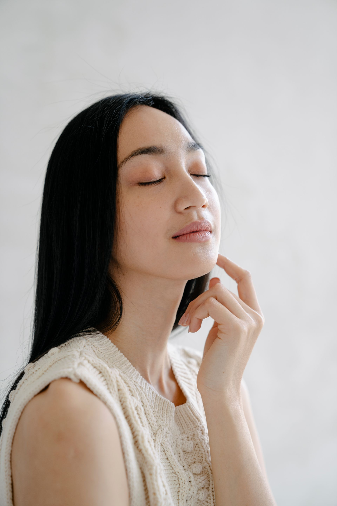

乾燥、くすみ、年齢による変化。
今の肌を知ることから。
乾燥やくすみ、年齢とともに感じる肌の変化。「自分に合うケアが分からない」という方も多いのではないでしょうか。
Body Salon RISEでは、今の肌の状態をていねいに確かめて、お悩みとご希望に合わせたケアの進め方をご提案します。食事や睡眠など、毎日の過ごし方のご相談もお気軽にどうぞ。

こんな方におすすめです
- 肌の調子が気になる
- 乾燥・くすみが気になる
- 年齢とともに肌の変化を感じる
- 自分に合うケアが分からない
- 大切な日に向けて肌を整えたい
- 食事や睡眠も見直したい
RISEの肌質改善で大切にしていること
まずは肌の状態を確かめる
カウンセリングで、今の肌の状態やふだんのお手入れ、気になっていることをうかがいます。
フェイシャルケア
肌の状態とご希望に合わせて、ケアの内容と進め方をご提案します。
生活習慣のご相談
食事や睡眠など、肌に関わる毎日の過ごし方もいっしょに見直します。ダイエット・整体との組み合わせも可能です。
肌質改善の施術の流れ
- 1
LINEでご予約
通いやすい院の公式LINEから。「マイタウンを見た」と一言添えてください。
- 2
カウンセリング
気になっていること、ふだんのお手入れや生活習慣をうかがいます。
- 3
肌の状態チェック
今の肌の状態を確かめ、気になる点をいっしょに見ていきます。
- 4
ケアのご提案
状態に合わせたケアの内容・通い方・料金をご案内します。
肌質改善の料金
- 肌質改善コース 初回限定はじめての方（ご新規の方）通常 11,000円 →5,500円
ご予約・ご来店の際に「マイタウンを見た」とお伝えください
※初回料金は、はじめての方（ご新規の方）が対象です。2回目以降の内容と料金は、肌の状態とご希望をうかがったうえで、カウンセリング時にご案内します。お支払いは現金・クレジットカードがご利用いただけます。
肌質改善のよくあるご質問
どんなケアをしますか？
肌の状態とご希望をカウンセリングでうかがったうえで、内容をご案内します。気になることは何でもお気軽にお聞かせください。
料金はいくらですか？
はじめての方は、肌質改善コースを初回限定5,500円（通常11,000円）でお受けいただけます。2回目以降は、肌の状態とご希望をうかがってカウンセリング時にご案内します。
肌質改善だけでも利用できますか？
まずは公式LINEからお気軽にご相談ください。お悩みやご希望をうかがい、合うメニューをご案内します。
どのくらいで変化を感じられますか？
肌の状態には個人差があるため、一概にはお伝えできません。カウンセリングで、通い方の目安をご相談しながら進めます。
ほかのメニューと組み合わせられますか？
はい。ダイエットや整体など、ほかのお悩みとあわせてご相談いただけます。
肌質改善のご予約は、LINEで
通いやすい院の公式LINEから、お気軽にどうぞ。施術中はお電話に出られないことが多いため、LINEかInstagramのDMが確実です。
ご予約・ご来店の際に「マイタウンを見た」とお伝えください
LINEでご予約の方は、メッセージに「マイタウンを見た」と書いていただくだけでOKです。
指宿院
指宿市大牟礼 3-25-23-1
指宿院のLINEで予約 ご予約時に「マイタウンを見た」とお伝えください営業時間 平日 10:00～19:00／土曜 10:00～18:00（完全予約制）
定休日 日曜・祝日
谷山院
鹿児島市小松原 1-48-11 SEAGREEN 小松原 102 号
谷山院のLINEで予約 ご予約時に「マイタウンを見た」とお伝えください営業時間 平日 9:30～19:00／土曜 9:30～18:00（完全予約制）
定休日 日曜・祝日
ほかのお悩みも、ひとつのサロンで。
ダイエット・整体・育毛・肌質改善は、組み合わせてのご相談も歓迎です。


店舗情報・アクセス
指宿市と鹿児島市谷山の2院。どちらも完全予約制です。子連れの方、男性の方もお気軽にどうぞ。
指宿院
指宿駅から車で約3分／駐車場3台
- 住所
- 〒891-0401
鹿児島県指宿市大牟礼3丁目25-23-1 - 営業時間
- 平日 10:00～19:00／土曜 10:00～18:00（完全予約制）
- 定休日
- 日曜・祝日
- 院長
- 和田 諒真（柔道整復師）
- SNS
- Instagram @wada.ibusuki
谷山院
駐車場なし（近くのコインパーキングをご利用ください）
- 住所
- 〒891-0114
鹿児島県鹿児島市小松原1丁目48-11 SEAGREEN 小松原102号 - 営業時間
- 平日 9:30～19:00／土曜 9:30～18:00（完全予約制）
- 定休日
- 日曜・祝日
- 院長
- 和田 一真（作業療法士）
- SNS
- Instagram @taniyama.diet